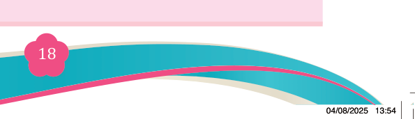
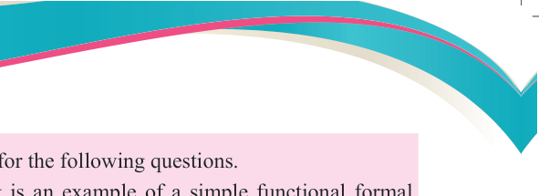

Fine Art for Secondary Schools

18


Student’s Book Form Two


Revision exercise 1
1. Choose the correct answers for the following questions.
(i) Which of the following is an example of a simple functional formal

artwork?
(a) A painting that tells a historical story
(b) A decorative wall pattern with balanced shapes and colours
(c) A photograph showing a family reunion
(d) A sculpture that expresses deep emotions
(ii) How do functionalism and formalism differ in their approach to understanding art?
(a) One focuses on usefulness, the other on visual elements.
(b) One applies only to paintings, the other to all art forms.
(c) One focuses on emotions, the other ignores them.
(d) There is no difference.
2. Match the concepts in Column A with their corresponding statements in
Column B
![Matching table with Column A listing: simple functional theory of art, simple functional formal theory of art, formal elements in art, example of functional art, and example of formalist art; and Column B listing: focuses on the beauty and arrangement of visual elements, art useful for a specific purpose in society, shapes colours lines balance texture and rhythm, logos advertisements furniture and architecture, abstract paintings and decorative designs, perspective is essential, and uses still figures.](images/pg024_im004.png)
Column A
Column B
i.
Simple functional theory
of art
A. Focuses on the beauty and arrangement of visual elements.
ii.
Simple functional formal
theory of art
B. Art that is useful for a specific purpose in society.
iii. Formal elements in art
C. Shapes, colours, lines, balance, texture, and rhythm.
iv. Example of functional art
D. Logos, advertisements, furniture, and architecture.
v.
Example of formalist art
E. Abstract paintings and decorative designs.
F.
Perspective is essential
G. Uses still figures
4. Why are balance and symmetry important in decorative art?
5. Briefly describe the following terms:
(i) Formalism theory
(ii) Cultural context
(iii) Cartoons
(iv) Decorative art
(v) Posters

04/08/2025 13:54